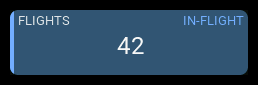
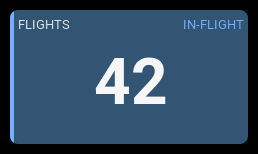
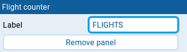

Flight counter
| 1x2 | 2x1 | 2x2 |
|---|---|---|
 |
 |
 |
Displays the model's GV9 flight total and highlights a detected active flight. Flight tracking is shared by AeroGrid dashboards and does not require a visible Flight counter.
Settings

| Setting | Default | What it does |
|---|---|---|
| Label | FLT | Panel heading. Clear it to restore the default. |
Select Arm switch in AeroGrid → Model settings. Changes apply immediately to every dashboard for the model. Until model arming is set, retained legacy Flight counter arm conditions remain in use and must agree for shared flight tracking. Conflicts require an explicit model selection, not an automatic choice. Saving None disables arming, including legacy fallbacks.
Model flight settings
Configure motor output, start/end detection windows, Smart detection, Session reset switch, and Flight status switch in Model settings. These settings save automatically and apply to the model's dashboards, including Empty dashboards. The panel drawer only configures its label.
Existing layouts keep their detection settings until you change Model settings. If older counters disagree, choose the intended configuration explicitly. Configure Model settings before removing the last legacy counter.
Behavior
A flight qualifies when the effective armed condition, Motor threshold (%), and live telemetry hold continuously for the Start detection window. Any interruption before qualification resets the attempt. Qualification increments the total once. Motor percentage maps the channel's normal low-to-high travel to 0–100%, after applying Reverse motor.
With Smart detection on, a flight can also qualify when trustworthy barometric altitude is more than 3 metres above its arming reference for 2 continuous seconds, or valid GPS groundspeed is more than 10 mph for 2 continuous seconds. Both shortcuts still require armed state, motor above the configured threshold, and live telemetry. The fixed speed rule is a provisional heuristic, not a guaranteed taxi/flight discriminator.
Smart discovers supported CRSF/ELRS and FrSky S.Port sensors automatically.
Open Model settings to see sensor readiness or why standard detection is
being used. Missing, ambiguous, stale, or unsupported sensors never block
standard qualification. Altitude needs a trustworthy recent reading seen while
disarmed or freshly received at the observed arm transition; starting AeroGrid
already armed or receiving altitude late does not establish that reference.
Healthy half-second and one-second updates are supported. Current means Smart
is bridging a normal interval between updates; stopped or unverifiable streams
fall back to standard detection. Low flights and short hops are not guaranteed
to qualify early.
The model's Arm switch overrides panel arm switches and also drives Chart, first-arm Navigation, and flight-session minima in this widget. Custom State-panel conditions remain independent. An unavailable arm reading cannot confirm disarming.
After qualification, telemetry or motor changes do not end the flight. Continuous disarming starts the End detection window (s). Re-arming before it expires cancels the pending end without counting again. A callback gap of more than one second restarts qualification or a pending end timeout rather than assuming the condition held while unobserved. Tracking continues through hidden dashboards, layout/theme rebuilds, and panel previews while AeroGrid callbacks are running. Adding counters does not create another detector.
Reserve GV9 in flight mode 0, with precision 0 and limits allowing 0–999. The existing total is kept, including one previously written by EdgeTX Flights. Invalid or unsavable counts produce an error rather than wrapping. Do not also run EdgeTX Flights or another GV9 flight counter. Configure other flight modes to inherit GV9 from flight mode 0.
If dashboard arm conditions conflict or settings change during a flight, the current flight finishes using its original condition and output. New flights wait until the configuration is consistent.
Optional logical-switch output
First configure a dedicated Sticky logical switch in EdgeTX, with no inputs, AND condition, delay, or duration. Then select it in Flight status switch. The list shows configured logical switches plus None. The output must not also be the flight's Arm or Session reset input. AeroGrid changes only its state, not its model configuration. Use the switch in your own Special Functions or sounds.
The output turns true at qualification and false after confirmed completion, including the disarm grace period. A full command buffer is reported and retried. Do not share this output with another script. It is not a safety interlock: stopped Lua execution, model changes, or transmitter restarts cannot guarantee output cleanup.
The Session reset switch cancels detection and clears its output without changing GV9. Disarm before another flight can be counted. AeroGrid does not write flight CSV files.
GV9 persists through model saving and transmitter restarts, but in-flight detection state does not. Changing model or restarting during a flight can lose its history and qualify it again.
States
| Condition | Presentation |
|---|---|
| Resting or qualifying | Count and normal styling, without a badge. |
| Qualified flight or pending disarm timeout | Count, mist blue surface, blue accent, and IN-FLIGHT badge. If the blue surface would be illegible, the surface keeps its normal color. |
| Confirmed completion | Count retained and normal styling restored. |
| GV9 unavailable | -- and an N/A badge. |
| Configuration or persistence failure | Actionable service error; resolve it before relying on tracking. |